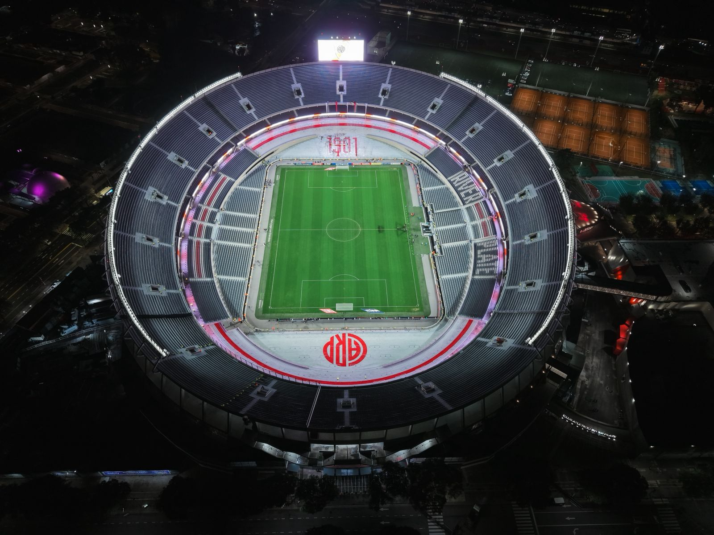
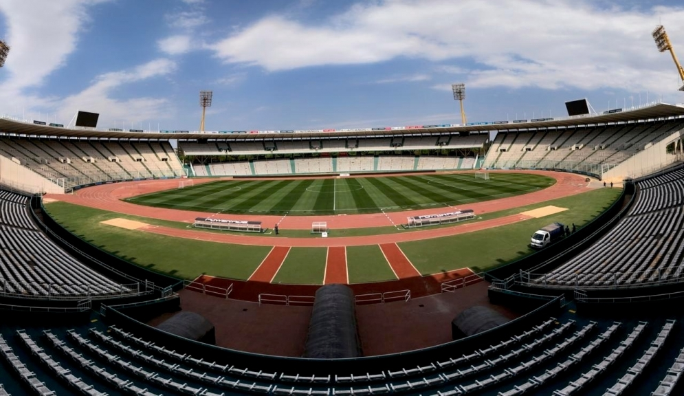
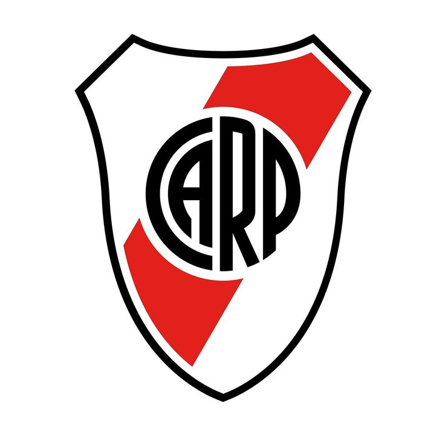
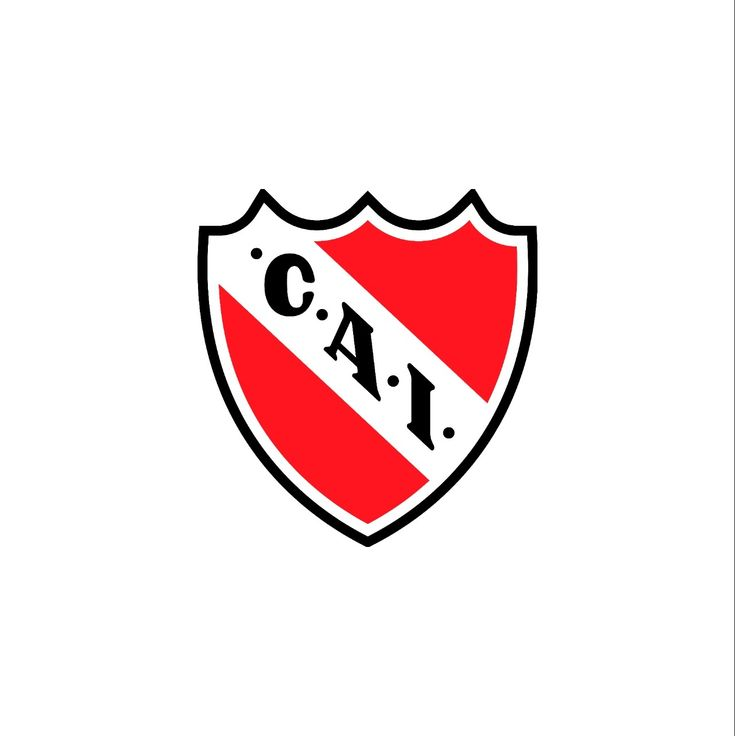
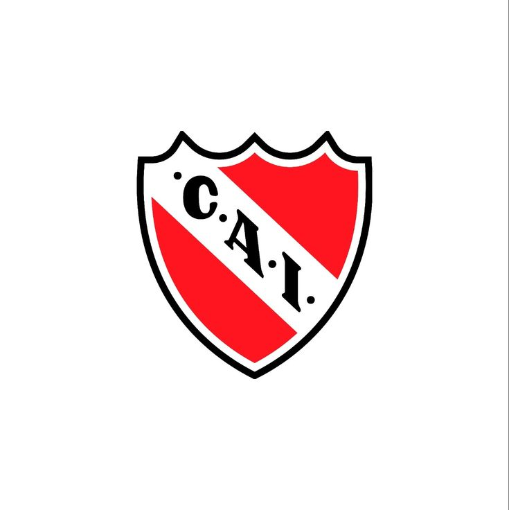

Sumérgete en la pasión del fútbol argentino con los estadios más legendarios del país.
La Bombonera - Boca Juniors

El Monumental - River Plate

Mario Alberto Kempes - Córdoba
Sobre Nosotros
Somos un grupo de estudiantes apasionados por el fútbol argentino. Este proyecto escolar celebra los estadios que han hecho historia en nuestro país, con detalles sobre su legado, datos de contacto y cómo visitarlos. ¡Vive la pasión del fútbol!
Mejores Canchas de Fútbol
La Bombonera
Estadio Alberto J. Armando, hogar de Boca Juniors. Conocido por su acústica única y la vibración de sus tribunas, apodado "La 12" por la pasión de sus hinchas, los "Xeneizes". Inaugurado en 1940, es un ícono del fútbol mundial.
Historia: Construido en un terreno de una antigua fábrica de ladrillos, su diseño compacto hace que las tribunas vibren con los cánticos de "La 12".
Logros: 6 Copas Libertadores, 3 Copas Intercontinentales, y 35 títulos de Primera División.
[](https://en.wikipedia.org/wiki/Boca_Juniors)

El Monumental
Estadio Antonio Vespucio Liberti, casa de River Plate y la Selección Argentina. El más grande del país, apodado "El Coloso". Sus hinchas, los "Millonarios", lo consideran un templo del fútbol. Inaugurado en 1938.
📍Dirección: Av. Pres. Figueroa Alcorta 7597, Núñez, Buenos Aires
Emblemático estadio en Córdoba, hogar de Talleres. Apodado "El Chateau", lleva el nombre del legendario goleador Mario Kempes. Sus hinchas, los "Matadores", llenan de pasión el estadio. Inaugurado en 1978.
Hogar de Independiente, conocido como "Rey de Copas" por sus hinchas, los "Diablos Rojos". Apodado "Doble Visera" por su diseño original. Renovado en 2009, es un símbolo de Avellaneda.
📍Dirección: Ricardo Bochini 751, Avellaneda, Buenos Aires
Casa de Vélez Sarsfield, apodado "El Fortín" por su solidez defensiva. Los hinchas, "La Pandilla de Liniers", crean un ambiente único. Inaugurado en 1943, es un estadio versátil.
📍Dirección: Av. Juan B. Justo 9200, Liniers, Buenos Aires
Hogar de Racing Club, conocido como "El Cilindro" por su forma. Los hinchas, "La Academia", son famosos por su pasión. Inaugurado en 1950, es clave en el Clásico de Avellaneda.
📍Dirección: Mozart y Corbatta, Avellaneda, Buenos Aires


 
